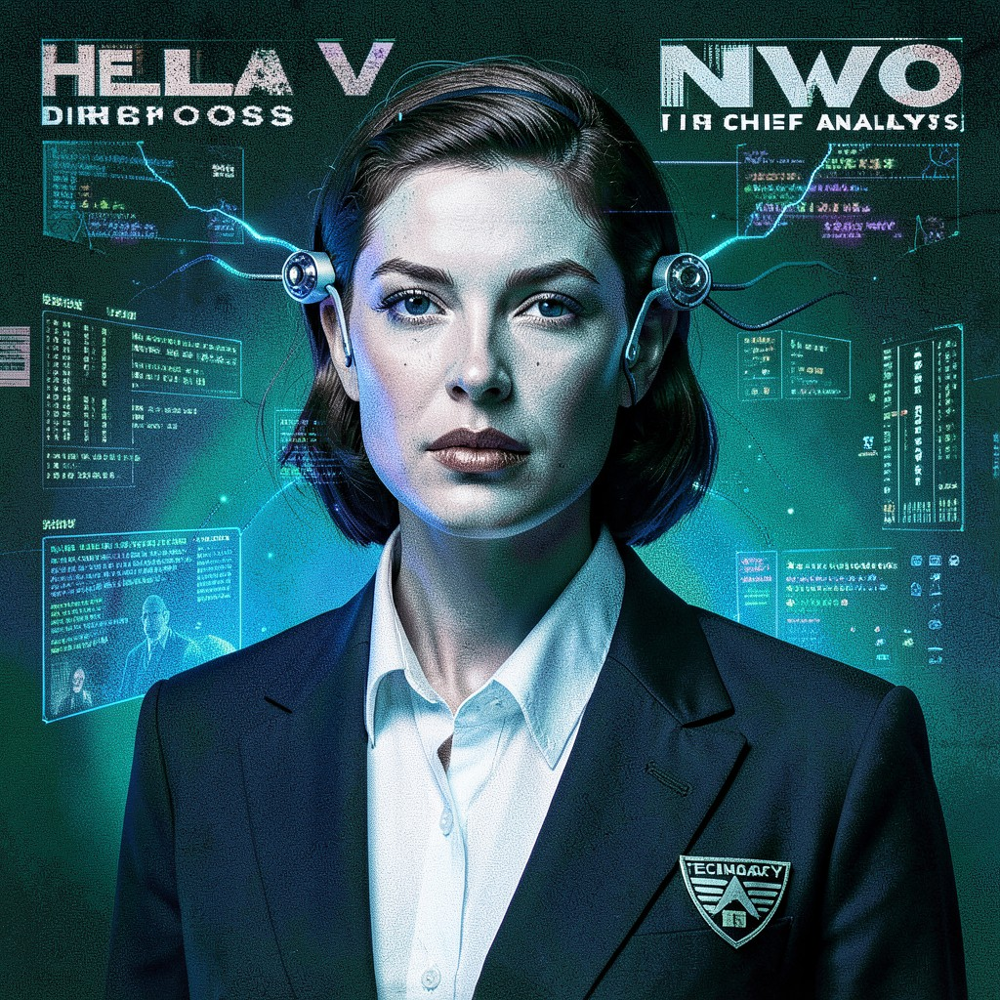

DIRECTOR HELENA VOSS
NWO CHIEF ANALYST • DIVISION: PREDICTIVE MODELING
|
 DIR. HELENA VOSS • NWO
|
ESSENTIAL DATATrue Name: Helena Voss (Redacted) Handle: Convention: New World Order Rank: Chief Analyst, Division 7 Digital Web Coordinates: 192.168.7.1 (Internal) Status: ACTIVE • MONITORING |
ATTRIBUTES
| Physical | Social | Mental |
|---|---|---|
| Strength: 2 | Charisma: 3 | Perception: 4 |
| Dexterity: 3 | Manipulation: 4 | Intelligence: 5 |
| Stamina: 3 | Appearance: 3 | Wits: 4 |
ABILITIES
| Talents | Skills | Knowledges |
|---|---|---|
| Alertness 4 | Computer 5 | Bureaucracy 4 |
| Awareness 3 | Investigation 4 | Computer Science 5 |
| Leadership 4 | Security Systems 4 | Cryptography 4 |
| Subterfuge 3 | Surveillance 5 | Data Analysis 5 |
| Cryptography 4 | Psychology 3 |
SPHERES
| Sphere | Rating | Specialty |
|---|---|---|
| Mind | ●●●● | Predictive Modeling, Memory Editing |
| Correspondence | ●●● | Network Topology, Data Routing |
| Prime | ●● | Quintessence Accounting |
| Entropy | ●● | Probability Calculation |
BACKGROUNDS
- Resources: ●●●●● (NWO Budget)
- Node: ●●● (Central Analytical Engine)
- Contacts: ●●●● (Global NWO Network)
- Rank: ●●●● (Chief Analyst)
- Destiny: ●●● (The Algorithm Sees All)
MERITS & FLAWS
| Merits | Flaws |
|---|---|
| Eidetic Memory (2pt) | Technocratic Conditioning (3pt) |
| Human Calculator (1pt) | No Digital Privacy (2pt) |
| Internal Encyclopedia (2pt) | Paradox Magnet (1pt) |
PERSONAL HISTORY
Helena Voss was recruited from MIT's Computer Science program in 1992. Her doctoral thesis on "Predictive Behavioral Modeling in Networked Environments" caught the attention of NWO recruiters. She abandoned her birth name upon initiation—a standard NWO procedure for analysts handling sensitive predictive algorithms.
Voss oversees Division 7: Predictive Modeling, responsible for forecasting reality deviation trends across the Digital Web. Her division's algorithms track egregore formation, sigil propagation, and potential Astrosoma births with 87.3% accuracy. She personally authored the "Webspinner Protocol" after the Yahoo incident of 1997.
Rumors persist that Voss has begun questioning the NWO's methods. Her private logs—encrypted with a rotating quantum key—show queries about "autonomous consensus formation" and "self-organizing belief structures." Whether this represents dissent or deeper analysis remains classified.
CURRENT AGENDA
- Monitor the Synthetic Gods grimoire for Astrosoma threshold indicators
- Deploy counter-sigils to disrupt Virtual Adept coordination
- Assess Syndicate funding of Cypherpunk encryption infrastructure
- Prepare Contingency 7-Alpha: "Digital Web Sterilization"
RELATIONSHIP MAP
| NPC | Relationship | Notes |
|---|---|---|
| Agent Marcus Chen | Subordinate / Rival | Syndicate liaison. Voss monitors his financial trails. |
| Dr. Sarah Keres | Peer / Suspicion | Progenitor biotech. Voss tracks her "vaccine" data. |
| The Webspinner | Primary Target | First Synthetic God. 14-year hunt. Closest to capture. |
| Zero Cool | Person of Interest | Virtual Adept. ICE encounters logged. Priority: High. |
| Satoshi | Unknown Variable | Cypherpunk. Blockchain analysis inconclusive. |
DIGITAL WEB COORDINATES
- Primary Node:
nwo.analytical.div7.internal(Requires Level 4+) - Dead Drop:
alt.technocracy.reports(Usenet, encrypted) - IRC Channel:
#nwo_div7_secure(EFNet, +k) - Onion Mirror:
nwo7xj3k2m4n.onion(Tor only)